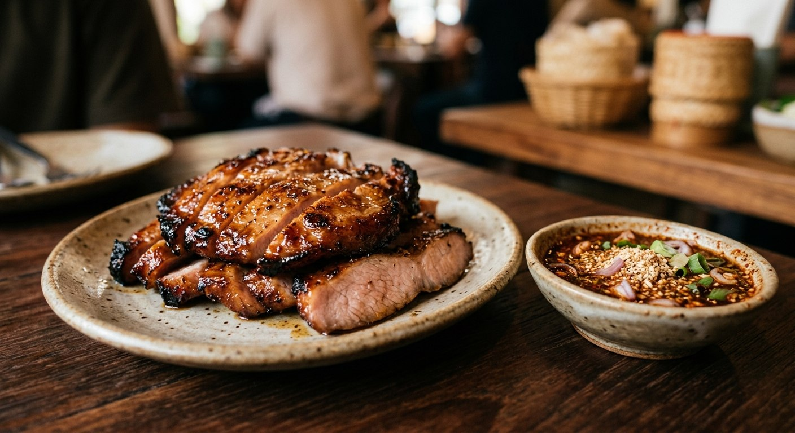

Marinated pork collar grilled over charcoal until the edges caramelise, dipped into jaew — smoky, fatty, and sharp.

หมูย่าง is gai yang's pork sibling — the same Isaan grill, the same jaew, a different animal. The cut is สันคอหมู, pork collar: the marbled muscle from the neck that stays juicy on the charcoal while the outside chars. TRR's recipe says what every grill master knows — the longer the marinade, the softer the meat — and Wongnai's Juno adds the tenderness trick before any of that: prick the meat all over with a fork so the marinade goes in deep.
The marinade is the standard Isaan set — oyster sauce, white soy, sesame oil, sugar, seasoning powder, and a pounded paste of coriander root, black peppercorns and garlic. Golden Mountain's version keeps it to that and rests it a quick fifteen minutes; the patient versions hold it in the fridge for an hour.
Then the jaew, and here the sources split into the dish's two genuine schools. Wongnai's jaew is built on tamarind water — the deeper, darker, Lao-style acid. Golden Mountain's runs on lime — brighter, quicker, the street version. Both get chilli powder, roasted rice, shallots and sawtooth coriander. The tamarind jaew is the slow one, the lime jaew the sharp one; either way, the roasted rice powder is what makes it jaew and not just chilli water.
| Thai | English | Amount |
|---|---|---|
| หมัก (marinade) | ||
| สันคอหมู | Pork collar | 400 g |
| ซีอิ๊วขาว / น้ำมันหอย | White soy / oyster sauce | 1 tsp / 1 tsp |
| น้ำมันงา | Sesame oil | 2 tsp |
| ผงปรุงรส / น้ำตาลทราย | Seasoning powder / sugar | 1 tsp / ½ tsp |
| รากผักชี / พริกไทยดำ / กระเทียม | Coriander roots / peppercorns / garlic | 3 / 5 / 5 cloves |
| น้ำจิ้มแจ่ว (jaew) | ||
| น้ำมะขามเปียก | Tamarind water | 2 tbsp |
| น้ำปลา / น้ำตาลปี๊บ | Fish sauce / palm sugar | 1 tbsp / 1 tsp |
| พริกป่น / ข้าวคั่ว | Chilli powder / roasted rice | 1–2 tbsp / ½–1 tbsp |
| หอมแดง / ผักชีใบเลื่อย / ต้นหอม | Shallots / sawtooth coriander / spring onion | 1 tbsp / 1–2 / 1 |
The lime school (Golden Mountain): 2 tbsp oyster + 2 tbsp seasoning sauce + pounded salt-pepper-coriander-garlic for the marinade; jaew of 3 tbsp white soy, 3 tbsp lime, 2 tsp chilli powder, 1 tbsp roasted rice, shallots, herbs. The minimal school (TRR): 300 g collar, 1 tbsp white soy, 1 tbsp oyster, 1 tsp palm sugar, ½ tsp pepper — 30 minutes in the fridge, medium charcoal.
Tamarind or lime jaew. The defining split. Wongnai's jaew uses tamarind water — darker, deeper, the Lao-style acid. Golden Mountain uses lime — brighter and quicker. The tamarind jaew is the slow Isaan original; the lime jaew is the street adaptation.
Soy or fish sauce in the jaew. Golden Mountain salts the jaew with white soy; Wongnai uses fish sauce. The fish-sauce version is funkier and more traditional; the soy version is the commercial bottler's take.
Marinade time. Fifteen minutes (Golden Mountain), thirty-plus (TRR), or a full hour (Wongnai). Everyone agrees longer is softer — the fifteen-minute version is the weekday shortcut.
Palm sugar in the marinade. TRR is the only source that marinates with palm sugar — the others sweeten with white sugar or not at all. The palm sugar caramelises on the grill into the char that sells the dish.
Charcoal or pan. The recipes allow both — charcoal first (TRR), pan as the home fallback (Golden Mountain). The smoke is the real thing; the pan needs the oil brush to fake the char.
This recipe is translated from the following Thai-language sources. Where they disagree, we've said so.
1. Wongnai — "สูตร คอหมูย่าง + น้ำจิ้มแจ่ว" by Juno J. Moore (the recipe used here: fork-pricking, tamarind jaew) — wongnai.com
2. Golden Mountain — "หมูย่างจิ้มแจ่ว" (the lime jaew school) — goldenmountainsauce.com
3. TRR Food Product — "คอหมูย่าง น้ำจิ้มแจ่ว" (the minimal marinade, charcoal method) — trrfoodproduct.co.th